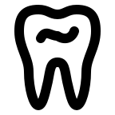
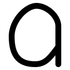
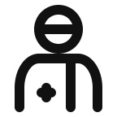

1. tooth — PASS

Restored the shallow crown groove and natural curved shoulders and long roots. Paired lobes and roots mirror about x=24. VRECT_L retains a tall dental silhouette; no defining detail omitted.
SVGNine strict passes and one approved bow-tie exception. The man now follows icon-avatar construction.

Restored the shallow crown groove and natural curved shoulders and long roots. Paired lobes and roots mirror about x=24. VRECT_L retains a tall dental silhouette; no defining detail omitted.
SVGRestored both rear marks and a flat lower shell. Windshield follows a smooth inset curve into the front. HRECT_M provides enough vertical space for two separated marks; the result is deliberately taller than the slender source. Right-facing asymmetry preserved.
SVGRestored the separate doorway frame and angled open leaf, detached from the house baseline. VRECT_L permits sufficient vertical room; tiny handle omitted because it cannot remain separate at this stroke weight.
SVGRestored the angled rounded cap, nozzle and rounded flat-bottom drop label. VRECT_L gives the label room below the cap; all defining elements preserved, with the cap raised for clearance.
SVGCorrected the concept from oxygen cylinder to liquid soap dispenser, following the visual reference. Restored a separate rectangular neck below the stem and T-shaped pump. VRECT_M keeps the bottle upright; body is broader and shorter than the source to preserve the three stacked structures.
SVG
Replaced the symmetric oval with the reference’s asymmetric single-storey a: rising left curve, higher crown, straighter right side and a short baseline stem. VRECT_L; no omissions. Curved bowl now separates promptly from the descending stroke.
SVGRounded the reservoir tip and smoothed its transition into the shoulders. Rolled rim uses equal semicircular ends, with an upright VRECT_L envelope. All defining parts retained.
SVG
Rebalanced onto VRECT_L (centerline bounds 8,4 to 40,44): taller portrait, circular head and cap band, curved shoulders, chest medical cross and offset coat fastening. Head bottom20 and shoulder top24 give zero visible ink gap. Cross and fastening retain full 4-unit ink clearance. Fine collar detail omitted. Full QA passes without exceptions.
SVGRebuilt with icon-avatar: centered circular head radius9, broad elliptical shoulders, short sides and open bottom. Head bottom22 and shoulder top26 give zero visible ink gap. VRECT_L preserves the upright portrait. Bow tie retained under the user-approved exception for its small openings and shoulder clearance. References: human_ref/user.svg and Lucide user-round.
SVGEnlarged the hub from radius3 to5 and widened the root recesses to preserve clearance. Six deliberate teeth and paired notches mirror across both axes. SQUARE preserves a balanced gear; no parts omitted.
SVG